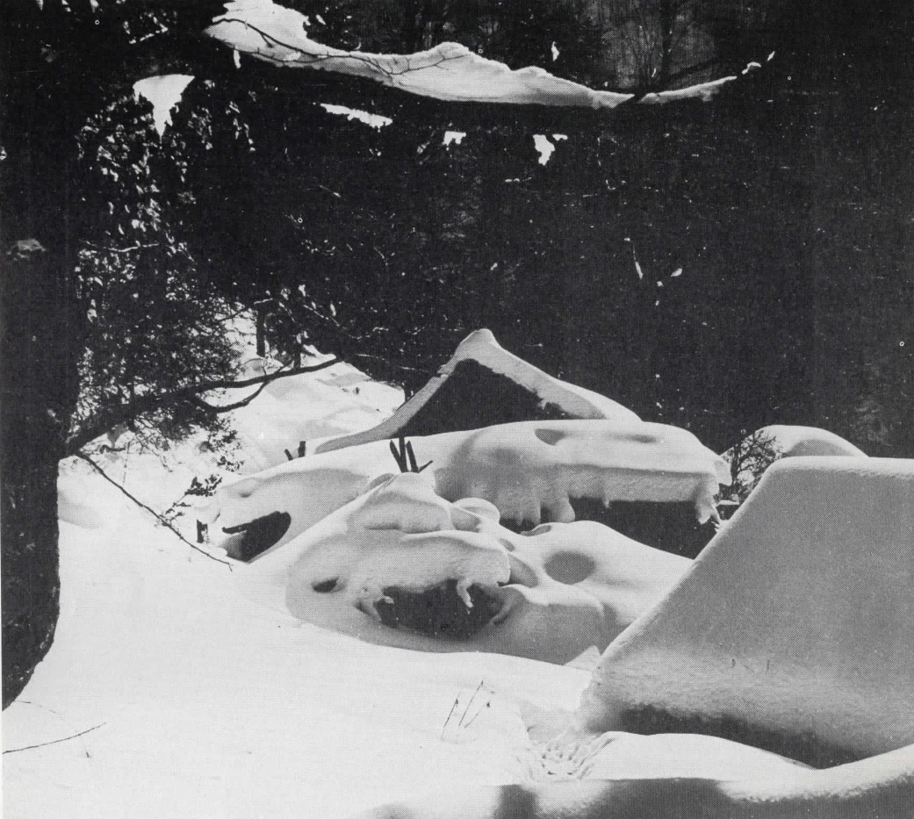
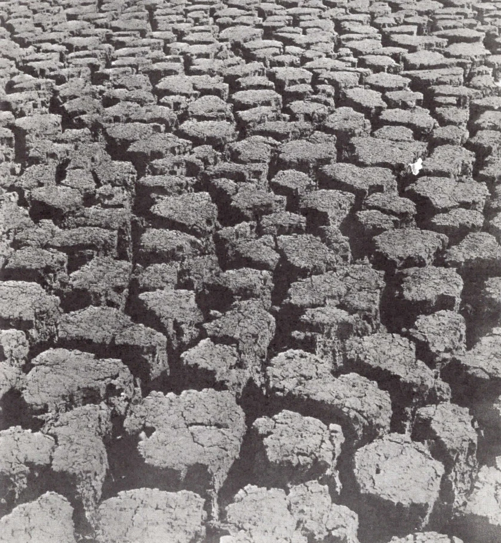
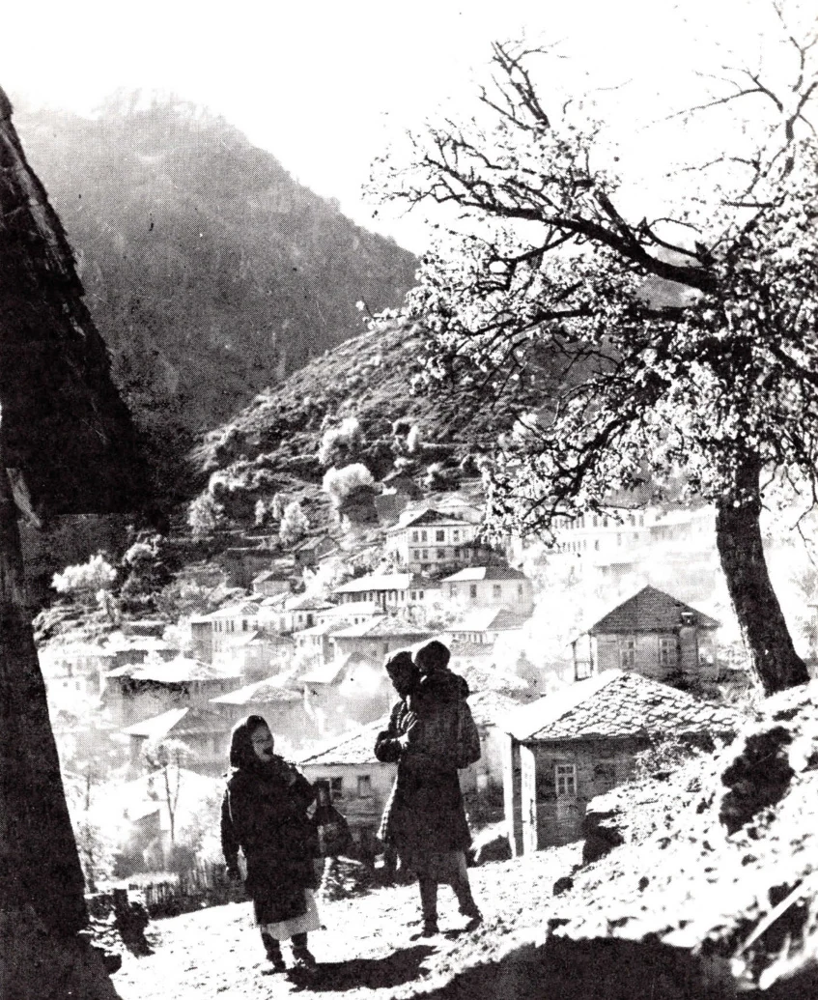
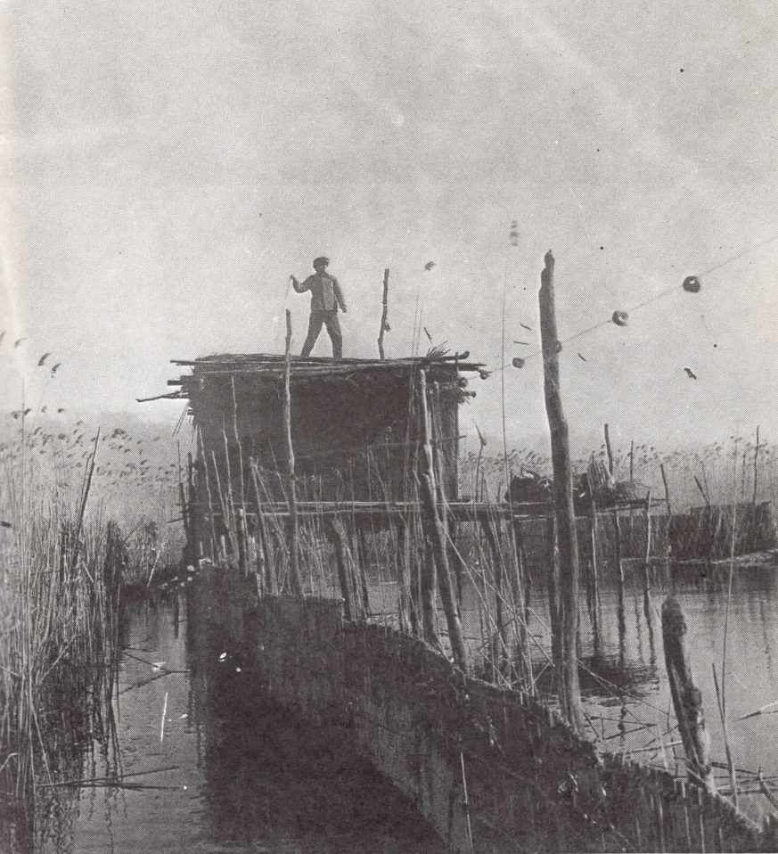
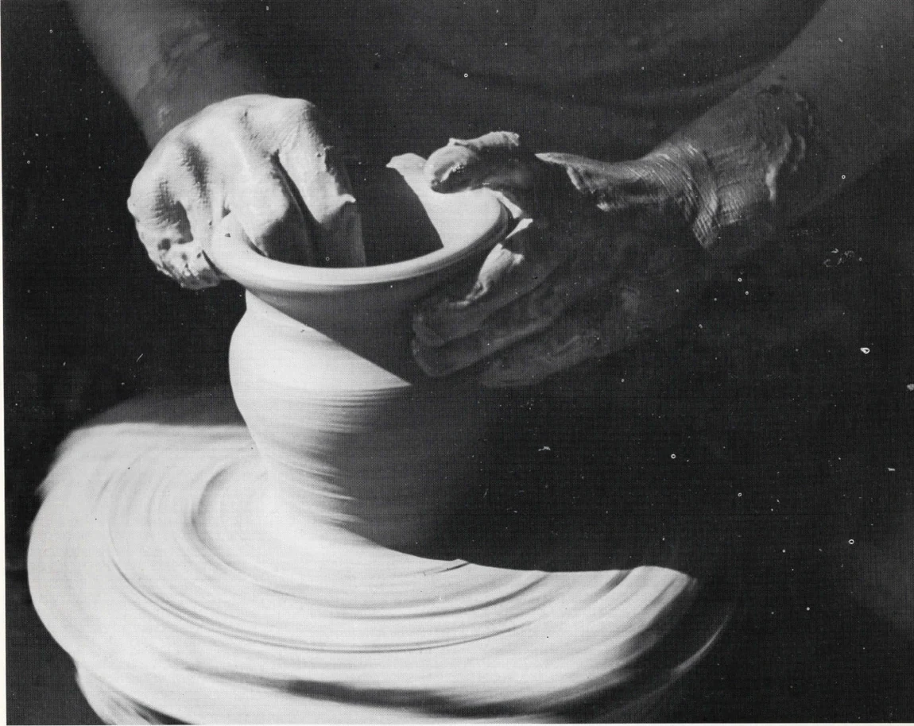
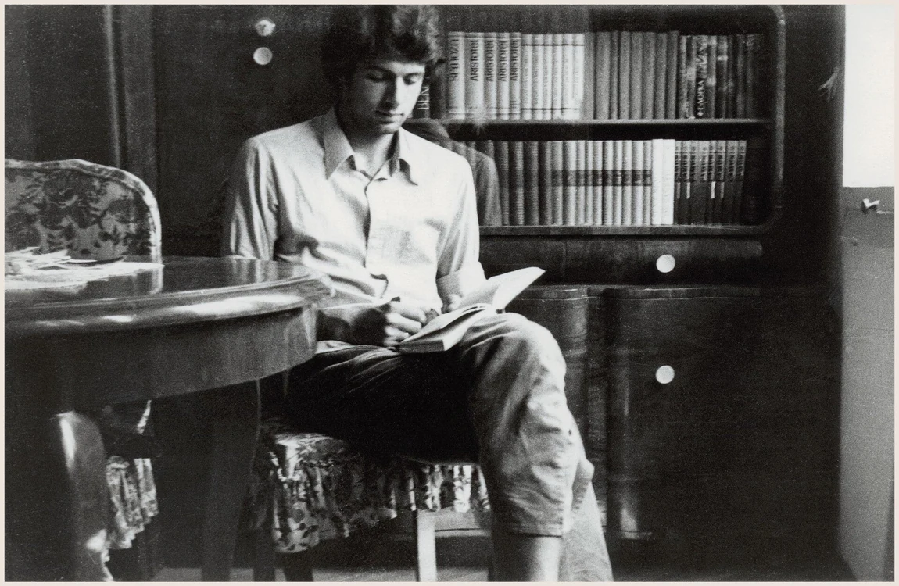
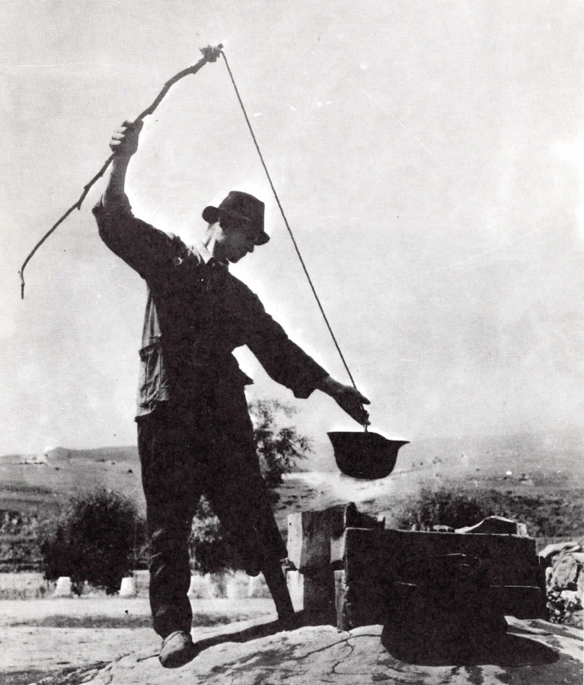
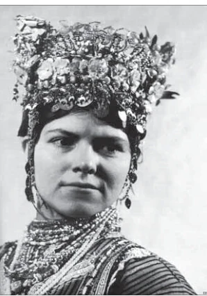
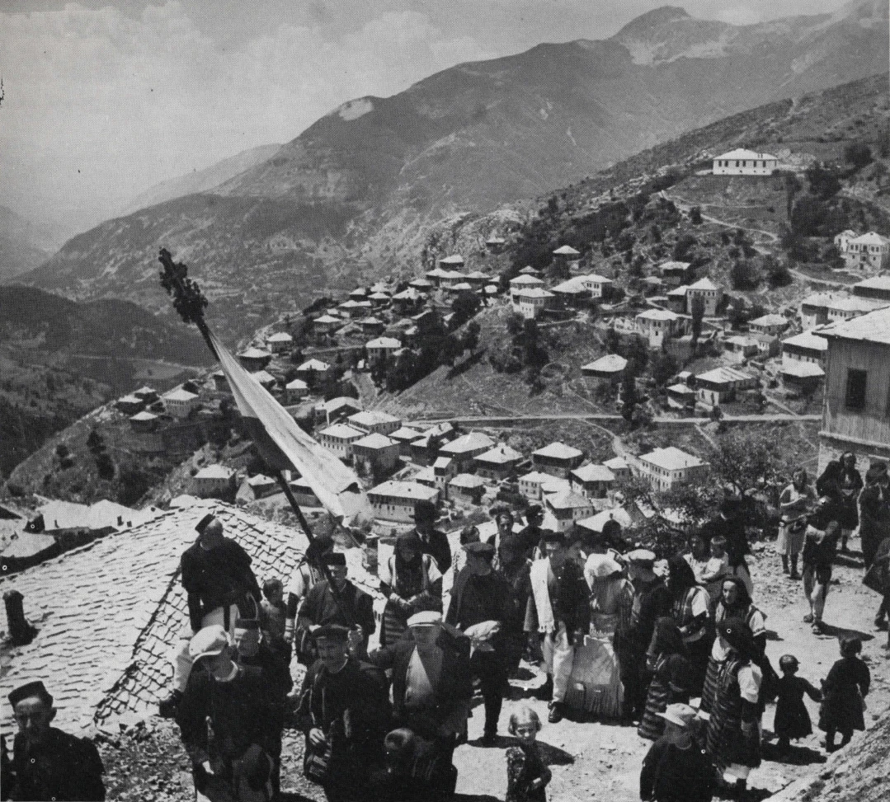
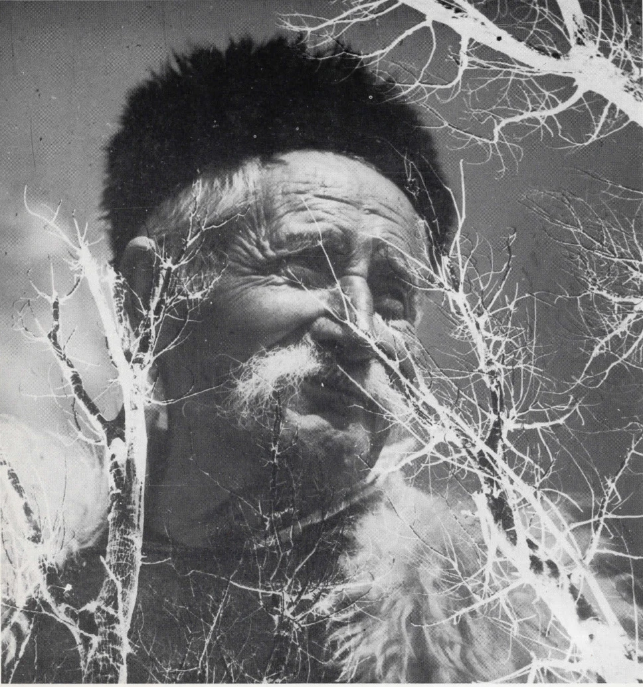

Biography
Blagoja Drnkov (1914–2012) was a Macedonian photographer and documentary filmmaker. He was born in Skopje and exhibited Silence in Belgrade in 1934. His photographs include portraits, landscapes, and records of village life and work.
From 1953 to 1957, Drnkov worked at the Ethnological Museum in Skopje. The Museum of Contemporary Art in Skopje presented a solo exhibition of his photography in 1974. A jubilee exhibition followed in 1984. The 2022 exhibition More Than Words examined his work in the ethnological museum archive.










Sources
- Museum of Contemporary Art, Skopje. Blagoja Drnkov, 1974. Solo exhibition catalogue with a text by Dimitar Kondovski.
- Art Gallery, Skopje. Blagoja Drnkov: 50 Years of Creativity, 1984. Jubilee catalogue, with an essay by Boris Petkovski and a chronology.
- Jovan Šurbanoski, More Than Words, 2022. Exhibition catalogue on Drnkov’s photographs in the ethnological museum archive.
- Cinematheque of Macedonia. Blagoja Drnkov. Biography and filmography.
The photographs are reproduced from published sources. Three captions describe images whose original titles and dates are unconfirmed.